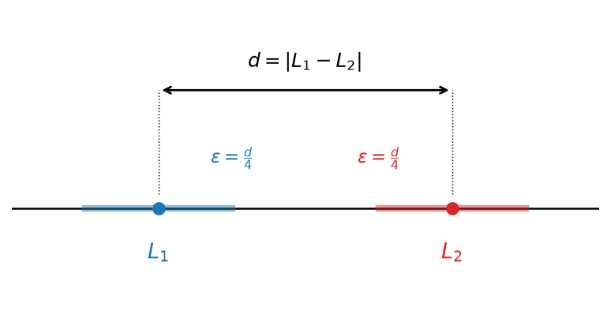
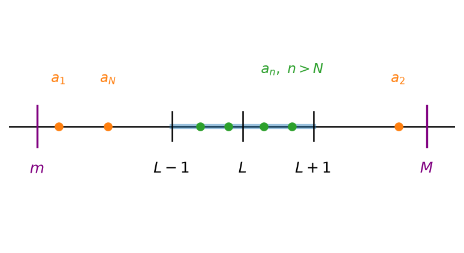
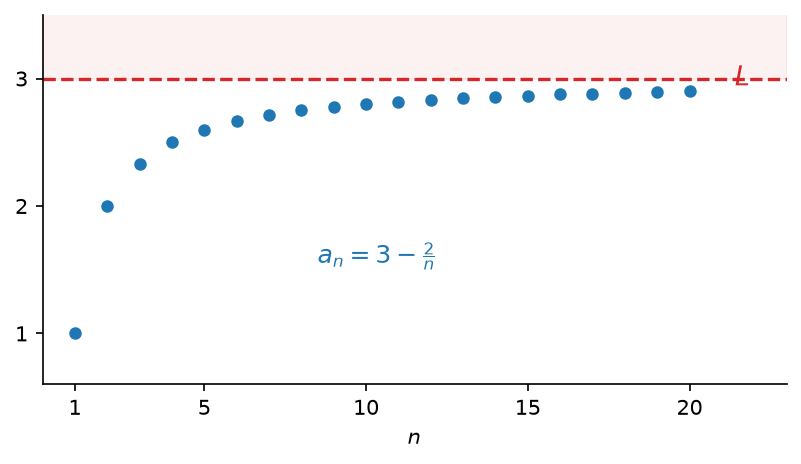
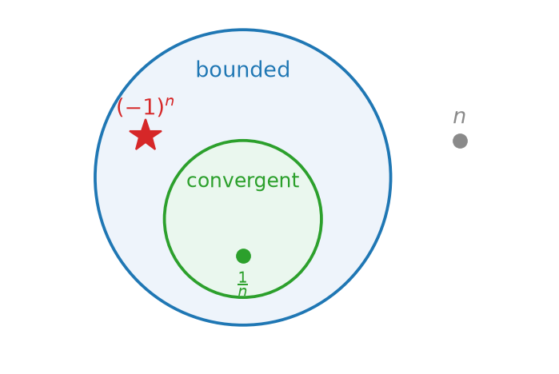

8 כלים לחישוב גבולות ולהוכחת התכנסות
8.2 חסימוּת של סדרה מתכנסת (וההיפך השגוי)
סדרה חסומה
נתחיל את הדיון בסוג נוסף של סדרות — כאלה שכל איבריהן נמצאים בטווח מסוים.
הגדרה 8.2.1.
תהי \((a_n)_{n=1}^{\infty}\) סדרה. נגיד כי הסדרה חסומה אם קיימים \(m, M \in \mathbb{R}\) כך שלכל \(n\) מתקיים \[.m \leq a_n \leq M\]
דוגמה 8.2.2 — סדרות חסומות ושאינן חסומות.
\(a_n = \dfrac{1}{n}\) סדרה חסומה, כי: \(0 \le a_n \le 1\) לכל \(.n\)
\(a_n = (-1)^n\) סדרה חסומה, כי: \(-1 \le (-1)^n \le 1\) לכל \(.n\)
\(a_n = n\) לא סדרה חסומה, כי: לכל \(M\), יהיה \(a_n > M\)
למשל, ניקח את \(n = \lfloor M \rfloor + 1\) עבורו \(a_n = n > M\)
תנאי שקול ופשוט יותר, שלעיתים נלקח כהגדרה של סדרה חסומה, הוא שקיים מספר אחד החוסם את כל איברי הסדרה בערך מוחלט.
משפט 8.2.3.
תהי \((a_n)_{n=1}^{\infty}\) סדרה. הסדרה חסומה אם ורק אם קיים \(M \geq 0\) כך שלכל \(n\) מתקיים \[.\left|a_n\right| \leq M\]
הוכחה.
נניח תחילה שקיים \(M \geq 0\) כזה. אי-השוויון \(\left|a_n\right| \leq M\) שקול ל-\(,-M \leq a_n \leq M\) וזוהי בדיוק ההגדרה של סדרה חסומה, עם החסם מלרע \(-M\) והחסם מלעיל \(.M\)
בכיוון השני, נניח שהסדרה חסומה, כלומר קיימים \(k, K\) כך שלכל \(n\) מתקיים \(.k \leq a_n \leq K\) נשאלת השאלה איזה \(M\) לבחור, והתשובה תלויה במקומם של \(k\) ו-\(K\) ביחס לאפס.
המקרה הראשון: שניהם אינם שליליים, כלומר \(.0 \leq k \leq K\) אז \(\left|k\right| = k\) ו-\(,\left|K\right| = K\) ולכן \(.\left|K\right| \geq \left|k\right|\) נבחר \(,M = \left|K\right|\) ואז לכל \(n\) מתקיים \(.-M \leq 0 \leq k \leq a_n \leq K = M\)
תרשים: כאשר \(0 \leq k \leq K\), הקטע שבו נמצאים האיברים כלוא בקטע הסימטרי שקצהו \(\left|K\right|\)

המקרה השני: שניהם אינם חיוביים, כלומר \(.k \leq K \leq 0\) אז \(\left|k\right| = -k\) ו-\(,\left|K\right| = -K\) ולכן \(.\left|k\right| \geq \left|K\right|\) נבחר \(,M = \left|k\right|\) ואז לכל \(n\) מתקיים \(.-M = k \leq a_n \leq K \leq 0 \leq M\)
תרשים: כאשר \(k \leq K \leq 0\), הקצה הרחוק מאפס הוא \(,\left|k\right|\) והוא הקובע את \(M\)

המקרה השלישי: הסימנים שונים, כלומר \(.k < 0 < K\) כאן אף אחד משני הקצוות אינו בהכרח הרחוק יותר מאפס, ולכן נבחר את הגדול מביניהם: \(,M = \max\left\{\left|k\right|, \left|K\right|\right\}\) ואז \(.-M \leq k \leq a_n \leq K \leq M\)
תרשים: כאשר הסימנים שונים, \(M\) נקבע לפי הקצה הרחוק יותר מאפס

שימו לב שבשלושת המקרים הבחירה הייתה אותה בחירה עצמה, \(.M = \max\left\{\left|k\right|, \left|K\right|\right\}\) במקרה הראשון המקסימום הוא \(,\left|K\right|\) בשני הוא \(,\left|k\right|\) ובשלישי הוא הגדול מביניהם. לכן אפשר לוותר על חלוקת המקרים ולכתוב את כל הטיעון בשורה אחת: בבחירה זו מתקיים \(\left|k\right| \leq M\) וגם \(,\left|K\right| \leq M\) ולכל מספר ממשי \(x\) מתקיים \(,-\left|x\right| \leq x \leq \left|x\right|\) ולכן \[.-M \leq -\left|k\right| \leq k \leq a_n \leq K \leq \left|K\right| \leq M\]
מכאן \(\left|a_n\right| \leq M\) לכל \(,n\) כנדרש.
היתרון של הניסוח הזה הוא שמעורבים בו שני סימנים בלבד, \(a_n\) ו-\(,M\) ואי-שוויון אחד במקום שניים: כדי להראות שסדרה חסומה די למצוא \(M\) אחד, וכדי להשתמש בחסימוּת די לדעת ש-\(.\left|a_n\right| \leq M\)
אפשר גם למדוד את המרחק מנקודה כלשהי ולא דווקא מאפס. למעשה, די למצוא נקודת ייחוס אחת שעובדת, ומיד נובע שכל נקודה אחרת עובדת אף היא.
משפט 8.2.4.
תהי \((a_n)_{n=1}^{\infty}\) סדרה. שלושת התנאים הבאים שקולים:
(א) הסדרה חסומה.
(ב) קיימים \(L \in \mathbb{R}\) ו-\(M \geq 0\) כך שלכל \(n\) מתקיים \(.\left|a_n - L\right| \leq M\)
(ג) לכל \(L \in \mathbb{R}\) קיים \(M \geq 0\) כך שלכל \(n\) מתקיים \(.\left|a_n - L\right| \leq M\)
הוכחה.
נוכיח את המעגל: (א) גורר (ג), (ג) גורר (ב), ו-(ב) גורר (א). מכאן ששלושת התנאים שקולים זה לזה.
(א) גורר (ג). נניח שהסדרה חסומה. לפי המשפט הקודם קיים \(K \geq 0\) כך שלכל \(n\) מתקיים \(.\left|a_n\right| \leq K\) יהי \(L \in \mathbb{R}\) כלשהו. המרחק בין \(a_n\) ל-\(L\) אינו יכול להיות גדול מסכום המרחק בין \(a_n\) לאפס והמרחק בין אפס ל-\(,L\) וזהו בדיוק אי-שוויון המשולש: \[.\left|a_n - L\right| \leq \left|a_n\right| + \left|L\right| \leq K + \left|L\right|\]
לכן הבחירה \(M = K + \left|L\right|\) מתאימה, וזאת לכל \(L\) שנבחר.
תרשים: הבחירה \(M = K + \left|L\right|\) שבהוכחה. שני הקטעים מכילים את כל איברי הסדרה, והקצה השמאלי של הקטע שסביב \(L\) נופל בדיוק על \(,-K\) שהיא הנקודה הרחוקה ביותר שאליה הסדרה עשויה להגיע

(ג) גורר (ב). מיידי: אם התנאי מתקיים לכל \(,L\) הוא מתקיים בפרט עבור נקודת ייחוס אחת, למשל \(.L = 0\)
(ב) גורר (א). נניח שקיימים \(L\) ו-\(M\) כאלה. אי-השוויון \(\left|a_n - L\right| \leq M\) שקול ל-\(,L - M \leq a_n \leq L + M\) וזוהי בדיוק ההגדרה של סדרה חסומה, עם החסם מלרע \(L-M\) והחסם מלעיל \(.L+M\)
שימו לב שהמעבר מ-(ג) ל-(ב) מיידי, ואילו הכיוון ההפוך, מנקודת ייחוס אחת לכל נקודת ייחוס, אינו ישיר והוא עובר דרך החסימוּת.
בתרגילים הבאים נשתמש בכך שלכל \(x\) ממשי מתקיים \(\left|\sin x\right| \leq 1\) וגם \(.\left|\cos x\right| \leq 1\)
שאלה 8.2.5 — אילו מהסדרות חסומות?.
עבור כל אחת מהסדרות הבאות, קבעו אם היא חסומה, ונמקו.
(א) \(a_n = \dfrac{1}{n^2+1}\)
(ב) \(a_n = \sin n\)
(ג) \(a_n = \sin\left(n^2\right) + \cos\left(n!\right)\)
(ד) \(a_n = \dfrac{n \sin n}{n^2+1}\)
(ה) \(a_n = \left(-1\right)^n - n\)
(ו) \(a_n = \sqrt{n} - \left\lfloor \sqrt{n} \right\rfloor\)
פתרון
פתרון.
(א) לכל \(n \geq 1\) מתקיים \(,n^2 + 1 \geq 2\) ולכן \(,0 < a_n \leq \dfrac{1}{2}\) ובפרט \(.\left|a_n\right| \leq 1\) הסדרה חסומה.
(ב) לכל \(n\) מתקיים \(,\left|\sin n\right| \leq 1\) ולכן הסדרה חסומה.
(ג) לפי אי-שוויון המשולש, \[.\left|\sin\left(n^2\right) + \cos\left(n!\right)\right| \leq \left|\sin\left(n^2\right)\right| + \left|\cos\left(n!\right)\right| \leq 1 + 1 = 2\] שימו לב שלא השתמשנו בשום מידע על \(n^2\) או על \(,n!\) אלא רק בתחום הערכים של הסינוס והקוסינוס.
(ד) מ-\(\left(n-1\right)^2 \geq 0\) נובע \(,n^2 + 1 \geq 2n\) ולכן \[.\left|\frac{n \sin n}{n^2+1}\right| = \frac{n \left|\sin n\right|}{n^2+1} \leq \frac{n}{n^2+1} \leq \frac{n}{2n} = \frac{1}{2}\] הסדרה חסומה.
(ה) הסדרה אינה חסומה. לכל \(n\) מתקיים \(,a_n \leq 1 - n\) ולכן לכל \(n \geq 2\) מתקיים \(.\left|a_n\right| \geq n - 1\) בהינתן \(M \geq 0\) נבחר \(,n > M + 1\) ואז \(,\left|a_n\right| \geq n - 1 > M\) כלומר אף \(M\) אינו חוסם את כל האיברים.
(ו) לפי הגדרת הערך השלם, לכל \(x\) ממשי מתקיים \(,\left\lfloor x \right\rfloor \leq x < \left\lfloor x \right\rfloor + 1\) ולכן \(.0 \leq \sqrt{n} - \left\lfloor \sqrt{n} \right\rfloor < 1\) הסדרה חסומה.
תרגיל 1. איזו מהסדרות הבאות אינה חסומה?
(א) \(a_n = \dfrac{\sin n}{n}\)
(ב) \(a_n = \dfrac{n^2}{n^2+1}\)
(ג) \(a_n = \dfrac{n^2+1}{n}\)
(ד) \(a_n = \cos\left(n!\right)\)
פתרון
פתרון.
התשובה היא (ג). מתקיים \(,\dfrac{n^2+1}{n} = n + \dfrac{1}{n} > n\) ולכן בהינתן \(M \geq 0\) כל \(n > M\) נותן \(,a_n > M\) והסדרה אינה חסומה.
שאר הסדרות חסומות: \(\left|\dfrac{\sin n}{n}\right| \leq \dfrac{1}{n} \leq 1\) לכל \(,n\) מתקיים \(0 < \dfrac{n^2}{n^2+1} < 1\) לכל \(,n\) וכן \(\left|\cos\left(n!\right)\right| \leq 1\) לכל \(.n\)
תרגיל 2. נתונה הסדרה \(.a_n = 17 + \dfrac{\left(-1\right)^n}{n}\) מצאו את המספר הקטן ביותר \(M\) שעבורו \(a_n \leq M\) לכל \(,n\) ואת המספר הגדול ביותר \(m\) שעבורו \(m \leq a_n\) לכל \(.n\)
פתרון
פתרון.
נפריד לפי זוגיות \(.n\) עבור \(n\) זוגי מתקיים \(,a_n = 17 + \dfrac{1}{n}\) וזהו ביטוי יורד ב-\(,n\) ולכן הגדול ביותר מתקבל ב-\(n = 2\) ושווה \(.\dfrac{35}{2}\) עבור \(n\) אי-זוגי מתקיים \(,a_n = 17 - \dfrac{1}{n}\) וזהו ביטוי עולה ב-\(,n\) ולכן הקטן ביותר מתקבל ב-\(n = 1\) ושווה \(.16\)
לכן לכל \(n\) מתקיים \(,16 \leq a_n \leq \dfrac{35}{2}\) ושני החסמים מתקבלים בפועל כערכים של הסדרה, ולכן אי אפשר להקטין את \(M\) או להגדיל את \(.m\)
תרגיל 3. אם \((a_n)\) ו-\((b_n)\) חסומות, אז גם \((a_n \cdot b_n)\) חסומה.
פתרון
פתרון.
נכון. לפי המשפט שלמעלה קיימים \(M_1 \geq 0\) ו-\(M_2 \geq 0\) כך שלכל \(n\) מתקיים \(\left|a_n\right| \leq M_1\) וגם \(.\left|b_n\right| \leq M_2\) מכפליות הערך המוחלט נובע \[,\left|a_n \cdot b_n\right| = \left|a_n\right| \cdot \left|b_n\right| \leq M_1 M_2\] ולכן \(M_1 M_2\) הוא חסם למכפלה.
תרגיל 4. אם \((a_n + b_n)\) חסומה, אז \((a_n)\) חסומה.
פתרון
פתרון.
לא נכון. ניקח \(a_n = n\) ו-\(.b_n = -n\) לכל \(n\) מתקיים \(,a_n + b_n = 0\) כלומר הסכום הוא הסדרה הקבועה \(,0\) שהיא חסומה. אבל \(a_n = n\) אינה חסומה, כפי שראינו בדוגמה שלמעלה.
הקשר בין התכנסות לחסימות של סדרה
למדנו אפוא תכונה נוספת של סדרות — חסימוּת. במבט ראשון היא נראית דרישה חלשה מהתכנסות: היא מבקשת רק שהאיברים לא יברחו לאינסוף, ואינה מבקשת מהם להתקרב לשום מספר מסוים.
ואכן, כבר ראינו סדרה חסומה שאינה מתכנסת: הסדרה המתחלפת \(,a_n = \left(-1\right)^n\) שאיבריה הם \(1, -1, 1, -1, \dots\) וכולם כלואים בין \(-1\) ל-\(,1\) אך אינם מתקרבים לשום מספר. את אי-ההתכנסות שלה הוכחנו בפרק הקודם, ולא נחזור על ההוכחה כאן.
זוהי עובדה חשובה, ולכן ננסח אותה כטענה.
טענה 8.2.6.
סדרה חסומה לא בהכרח מתכנסת.
נשאלת השאלה אם בכל זאת יש קשר כלשהו בין שתי התכונות.
משפט 8.2.7.
אם \((a_n)_{n=1}^{\infty}\) סדרה מתכנסת, אז היא חסומה.
הוכחה.
נניח שהסדרה מתכנסת. אז יש לה גבול, ונסמן \(.\lim\limits_{n\to\infty} a_n = L\)
נפעיל את הגדרת הגבול עם \(:\varepsilon = 1\) קיים \(N \in \mathbb{N}\) כך שלכל \(n \geq N\) מתקיים \(.\left|a_n - L\right| < 1\)
התנאי הזה מטפל בכל האיברים החל מ-\(,N\) ומחוצה לו נשארו רק האיברים \(a_1, \dots, a_N\) שהם מספר סופי של איברים. לכן אפשר לבחור \[.M = \max\left\{\left|a_1 - L\right|,\ \dots,\ \left|a_N - L\right|,\ 1\right\}\]
הבחירה אפשרית משום שמדובר בקבוצה סופית של מספרים, ולקבוצה סופית יש מקסימום.
נראה שלכל \(n\) מתקיים \(.\left|a_n - L\right| \leq M\) אם \(,n \geq N\) אז \(,\left|a_n - L\right| < 1 \leq M\) שכן \(1\) נכלל ברשימה שממנה נלקח המקסימום. ואם \(,n < N\) אז \(\left|a_n - L\right|\) הוא בעצמו אחד מאיברי הרשימה, ולכן אינו גדול מן המקסימום שלה.
תרשים: החל מ-\(N\) כל האיברים נמצאים בקטע \(,(L-1,\ L+1)\) ורק מספר סופי של איברים ראשונים עשוי לחרוג ממנו. הבחירה של \(M\) לוקחת את הגדול שבמרחקים הללו, ולכן כל הסדרה כלואה בין \(L-M\) ל-\(L+M\)

מצאנו אפוא נקודת ייחוס \(L\) ומספר \(M \geq 0\) שעבורם \(\left|a_n - L\right| \leq M\) לכל \(,n\) וזהו בדיוק תנאי (ב) שבמשפט הקודם. לכן הסדרה חסומה.
לסיכום, התכנסות גוררת חסימוּת אך לא להיפך. אפשר להתרשם מכך בתרשים הבא.
תרשים: הסדרות המתכנסות הן תת-קבוצה של הסדרות החסומות. הסדרה \(\frac{1}{n}\) נמצאת בעיגול הפנימי, הסדרה \(\left(-1\right)^n\) חסומה אך אינה מתכנסת ולכן נמצאת בטבעת שביניהם, והסדרה \(a_n = n\) אינה חסומה כלל

מן המשפט מתקבל כלי שימושי להוכחת אי-התכנסות: אם ידוע שסדרה אינה חסומה, אין צורך לבדוק דבר נוסף, והיא בוודאי אינה מתכנסת.
מסקנה 8.2.8.
אם \((a_n)_{n=1}^{\infty}\) סדרה שאינה חסומה, אז היא אינה מתכנסת.